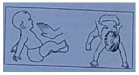
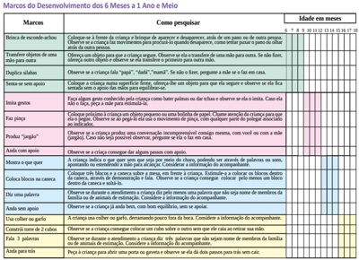
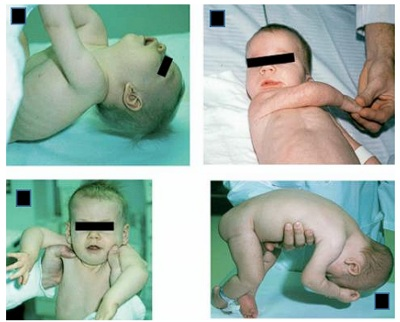
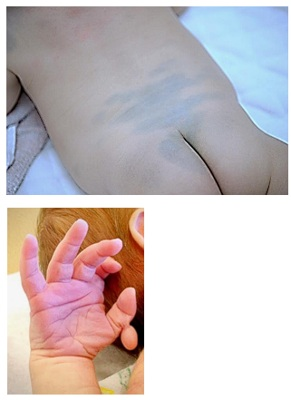

Considere a descrição abaixo, referente a um reflexo evidenciado pelo pediatra ao examinar um recém-nascido. A descrição corresponde ao reflexo de

A Moro.
B Magnus e Kleijn.
C Landau e Magnus.
D Galant.
Miguel é uma criança de 3 meses, que foi levada por sua mãe, Rafaela, para consulta de puericultura. Miguel nasceu com peso de 3450g, perímetro cefálico de 34cm e 48cm de comprimento; seu exame físico, hoje, apresenta as seguintes medidas: peso de 6830g, perímetro cefálico de 41cm e comprimento de 61cm. Quando questionada, Rafaela traz algumas preocupações: refere que está preocupada com o peso de Miguel, pois acha que produz pouco leite; está preocupada também com o desenvolvimento do bebê e se ele já não deveria estar sentando. Ao conferir o cartão de vacinas de Miguel, o médico da UBS verifica as seguintes vacinas no cartão: BCG, DTP, Hib, VIP e pneumo conjugada. Considerando o caso descrito e seus conhecimentos, julgue o item a seguir. Pelo relato de Rafaela, Miguel apresenta atraso no desenvolvimento, pois, nessa idade, já é esperado que a criança sente sem apoio.
Menina de 9 meses foi trazida à UBS para atendimento em puericultura. Ao ser aplicado o Instrumento dos Marcos de Desenvolvimento, que integra a Caderneta da Criança, foi constatado, pela 1a vez, que a criança não desenvolvera 2 habilidades para a faixa etária. Até então, vinha sendo capaz de dar conta de todos os itens do Instrumento para a faixa etária correspondente. Diante desse cenário e segundo as orientações contidas na referida Caderneta, como a criança deve ser classificada e qual a conduta a ser adotada?
A avaliação do desenvolvimento dos reflexos primitivos da criança, a partir do nascimento, permite determinar a integridade do sistema nervoso central, de acordo com a idade cronológica. O reflexo de Moro deve estar presente no recém-nascido a termo desde o nascimento. Em relação ao período máximo de idade em que pode persistir, dentro de um cenário de normalidade do desenvolvimento, assinalar a alternativa CORRETA:
Para que um recém-nascido, 15 dias de vida, nascido a termo por parto normal, em aleitamento materno exclusivo, tenha seu desenvolvimento motor considerado como adequado,
Menino de 2 anos e 3 meses comparece ao ambulatório com a avó. Preocupada com o desenvolvimento da criança, a senhora relata que, diferente de seus outros netos, o paciente ainda não fala nenhuma palavra, embora emita sons, escute bem e aponte o que deseja. A avó nega história de prematuridade, as xia perinatal ou comorbidades e o menino não apresenta prejuízo no desenvolvimento motor ou na interação social. Nesse caso, em relação à investigação, o médico deve:
Durante uma consulta de rotina de puericultura, a mãe de uma criança de 8 meses relata que está preocupada porque o seu lho ainda não consegue sentar sem apoio. A criança nasceu a termo e não há outras queixas; teste do pezinho: sem alterações. Você observa, durante a consulta, que a criança necessita de auxílio para passar da posição supina para a sentada, mas uma vez nessa posição permanece estável, sem cair. Restante do exame físico sem alterações. Qual a melhor conduta?
Uma criança do sexo masculino, com 11 meses de idade, é avaliada quanto ao seu desenvolvimento em consulta de rotina. A mãe pergunta ao pediatra se a criança está com o desenvolvimento adequado. Considerando que a criança já atingiu os marcos do desenvolvimento esperados em idades anteriores, neste momento, para que esta criança seja considerada como tendo seu desenvolvimento normal, espera-se que ela
Uma senhora vem à consulta de rotina e deseja saber do médico algumas das características de desenvolvimento normais para seu filho de 15 meses de idade. Assinale a alternativa correta.
Considere a descrição abaixo, referente a um reflexo evidenciado pelo pediatra ao examinar um recém-nascido. A descrição corresponde ao reflexo de
Uma lactente de 6 meses, sexo feminino, nascida com 30 semanas, ganho de peso satisfatório, em aleitamento materno exclusivo até o momento, é levada para consulta de puericultura. A mãe acredita que sua lha está com atraso do desenvolvimento. Ao exame físico, o médico nota que a criança não consegue car sentada sem apoio, mas sustenta a cabeça na posição sentada; leva as mãos à boca; ao encostar brinquedo na mão, ela o segura; não se apoia sobre os braços e ainda não rola. Diante desse quadro, assinale a conduta correta.
Leandro acabou de completar 3 anos de idade e veio à consulta de puericultura, acompanhado de sua mãe, Roseli, que não tem nenhuma queixa. Qual achado indicaria atraso de desenvolvimento neuropsicomotor?
Os reflexos primitivos aparecem e desaparecem dentro de períodos específicos do desenvolvimento. A imagem abaixo faz alusão gráfica a reflexo que aparece por volta do:

Tendo em vista a avaliação de desenvolvimento neuropsicomotor e os conhecimentos médicos correlatos, assinale a alternativa correta.
Antônio é um lactente de 10 meses de idade e a mãe o trouxe para uma consulta de rotina. A anamnese completa e ao exame físico para avaliação dos marcos do desenvolvimento, qual dos achados abaixo é preocupante e deve ser motivo de melhor investigação nessa idade?
Um bebê de 6 meses de vida foi levado pela mãe à equipe de Saúde da Família (eSF) para consulta de rotina de puericultura. A mãe relata que está preocupada, pois a criança mostra-se mais chorosa, apresentando irritabilidade, di culdade para dormir e pico febril de 39 °C na noite anterior. A criança está previamente hígida, em aleitamento materno exclusivo, fez uso de paracetamol há duas horas e sua temperatura é de 37,5 °C no momento. A mãe nega que a criança tenha alergias medicamentosas. Ao exame físico, verificam-se auscultas pulmonar e cardíaca sem alterações, abdome sem particularidades, otoscopia direita com presença de membrana timpânica abaulada e hiperemiada, sem presença de otorreia. A criança é capaz de rmar a cabeça e apanhar objetos, e as medidas antropométricas estão próximas ao percentil 50. Carteira de vacinação atualizada. Com base nesse caso clínico e nos conhecimentos médicos correlatos, julgue o item a seguir. Apesar de medidas antropométricas estarem adequadas nesse momento, o desenvolvimento neuropsicomotor está atrasado, pois a criança com essa idade já deveria ser capaz de sentar sem apoio.
Um paciente de 2 anos e 3 meses de idade foi levado ao ambulatório de pediatria pela mãe, pois ela está preocupada com um “caroço” no pescoço do lho, que ela notou há cinco meses. Relatou que o lho é bastante ativo, que se alimenta bem, sempre ganhou peso, mas fala pouco e palavras difíceis de compreender. Ademais, há muito tempo apareceram alguns machucados no couro cabeludo dele, que o menino coça bastante e tem algumas crostas. Ao exame físico, constataram- se altura = 90 cm (escore z 0), peso = 12,300 kg (escore z entre 0 e -2), FC = 120 bpm, FR = 26 irpm e SatO2 = 97% em AA. No couro cabeludo, há várias lesões com crostas melicéricas e presença de linfonodo retroauricular medindo 1,5 cm, móvel, broelástico, indolor à palpação. Observaram-se oroscopia, dentes em bom estado, sem lesões, sem frênulo lingual, otoscopia, com membrana timpânica translúcida, sem abaulamentos ou retrações e ausculta cardíaca, BNF, RR, 2t, sem sopro. Veri caram-se, ainda, ausculta pulmonar, MVUD, sem RA, abdome, RHA+, depressível, sem megalias, indolor à palpação e genitália com testículos em bolsa escrotal e mose. Com base nesse caso clínico e nos conhecimentos médicos correlatos, julgue o item a seguir. Aos 2 anos de idade, com certeza a criança deve usar colher/garfo, subir degraus, imitar trabalhos caseiros, rabiscar e nomear partes do corpo.
Você é médico da Estratégia de Saúde da Família na zona rural de sua cidade. Recebe para consulta um lactente de 10 meses com antecedentes neonatais sem intercorrências e com boa evolução até o momento. Já iniciou introdução alimentar e mantém aleitamento materno. Ao aplicar o instrumento para avaliação do desenvolvimento você verifica que: não duplica sílabas, não transfere objetos de uma mão para outra, brinca de esconde achou, senta-se sem apoio, imita gestos, faz pinça, produz jargão e não anda com apoio. Qual a classificação e qual seria sua conduta nessa consulta?

Menino, 1 ano e 2 meses de idade, é acompanhado em puericultura na UBS desde o nascimento, apresentando crescimento e desenvolvimento adequados. Na consulta de hoje, a mãe mostrou-se preocupada, pois o lho fala pouco e ainda não anda sozinho, diferentemente da outra lha que nessa idade falava bastante e andava pela casa sozinha. Ao avaliar os marcos do desenvolvimento, o médico observou que o menino ca de pé com apoio e troca passos, faz movimento de pinça ao pegar uma “bolinha de papel”, aponta com o indicador quando quer um objeto e fala “papá, mamá, qué, dá, não”. Qual é o diagnóstico mais provável do desenvolvimento?
Revisar: possível letra faltando em enunciado
Recém-nascido, 40 semanas de idade gestacional, sexo masculino, nasceu de parto cesárea por falha de indução, Apgar 9/10, peso de 2.950 g. Mãe primigesta, 20 anos, não fez pré-natal e relata ser usuária habitual de drogas ilícitas. O menor está sendo examinado no alojamento conjunto, com 72 horas de vida, e alguns dados do exame clínico estão apresentados nas imagens abaixo. Qual é a conduta indicada face aos dados clínicos apresentados?


Lactente, sexo feminino, 11 meses de vida, está em consulta ambulatorial de rotina. Trata-se de criança prematura, nascida de 35 semanas, com peso de nascimento de 2110 g, sem intercorrências durante o seguimento. Na consulta de hoje, a maior preocupação da mãe é que a criança não engatinha. Na avaliação realizada na consulta, notado que a criança imita a mãe ao bater palmas, faz movimentos de pinça para pegar objetos, reage a uma conversa como se estivesse respondendo, mas com sons incompreensíveis, sem falar nenhuma palavra. Ela ca em pé com apoio, mas realmente não engatinha quando colocada de bruços. Qual das alternativas contempla, respectivamente, a avaliação do desenvolvimento e a conduta indicada?
Revisar: possível letra faltando em enunciado
Um casal de adolescentes traz seu lho de 6 meses à Unidade de Saúde, preocupado se seu desenvolvimento está se dando de forma normal. O lactente nasceu a termo e está em aleitamento materno exclusivo. Ao examiná-lo, o médico orienta o casal em relação à aquisição de novas habilidades pelo bebê. Aos 6 meses, o que se espera que um lactente com desenvolvimento normal seja capaz de fazer?
Em relação aos reflexos primitivos e posturais da criança, o reflexo presente em uma criança normal aos 3 anos de idade é:
Maria Clara, tem 18 meses, e após um período ausente do acompanhamento médico, retornou hoje à sua consulta. A mãe relata que a criança esteve bem no período entre as consultas, têm boa aceitação alimentar, é ativa e anda para todos os lados da casa, mas o fato da criança não falar nenhuma palavra até hoje a incomoda bastante. Durante a consulta, você nota que a criança anda com equilíbrio sem apoio, rabisca uma linha e faz uma torre de 4 cubos. Ao tentar interagir com a criança, ela responde com emissão dissilábica e apontando para os objetos. A mãe nega comorbidades. Diante dessa situação, qual a conduta mais adequada para esse paciente e sua família?
Ao concluir o exame de Maria, 4 meses e meio, o médico comunica aos pais da criança que a criança tem alerta para atraso do desenvolvimento motor. Qual das situações abaixo caracteriza esse diagnóstico?
Os pais de Cauê, 5 meses, questionam se o desenvolvimento neuropsicomotor (DNPM) da criança está normal, pois percebem que a criança ainda não rola como o vizinho da mesma idade. Quais os outros marcos de DNPM o médico deve avaliar, pois devem estar presentes na faixa etária de Cauê, antes de emitir um parecer diagnóstico.
O preceptor do ambulatório de puericultura, solicita o seu parecer diagnóstico para o desenvolvimento neuropsicomotor de Luiza, 9 meses de idade, nascida a termo e sem antecedentes patológicos. Assinale a alternativa que contém as aquisições que devem ter ocorrido entre seis e nove meses, de acordo com o instrumento de avaliação da caderneta do Ministério da Saúde.
Lactente de 6 meses de vida é conduzido para consulta de puericultura. Está em aleitamento materno exclusivo, sem queixas. Não faz uso de nenhuma medicação. Refere gestação e parto sem intercorrências. Em relação ao desenvolvimento neuropsicomotor, qual alternativa configura atraso para um lactente de 6 meses?
Considerando o desenvolvimento neuromotor, o desaparecimento do reflexo tônico assimétrico significa que uma criança pode começar a examinar objetos na linha média e manipulálos com ambas as mãos. Essa etapa do desenvolvimento é esperada que aconteça a partir da faixa etária de:
Lactente de um ano e dois meses engatinha e anda com apoio, consegue apanhar objetos, reconhece a mãe, aponta o que quer e imita gestos, como bater palmas e dar tchau. Entretanto, ainda não fala palavra alguma nem mantém jargão (fala com emissão de sons com entonação e sem significado). Esse lactente tem:
Você preenche a Caderneta da Criança no primeiro mês de vida de seu paciente e, somando-se às informações maternas e sua observação na consulta, conclui que o desenvolvimento neuropsicomotor (DNPM) está adequado. Qual das alternativas contém o preenchimento compatível com essa condição? braços e pernas exionados em supino; observa olhar a 30cm; reage ao som de chocalho com mudança de expressão - facial/movimento dos olhos; em prono, levanta a cabeça sem virar para os lados
A preocupação materna quanto ao desenvolvimento motor de um lactente de 9 meses de idade deve ser valorizada quando a criança não for capaz de?
Maria, 11 meses de idade, está ao lado de sua mãe e de sua tia. Elas conversam sobre crianças. Consideram a garotinha muito esperta: há um mês já cava em pé sem apoio e agora dá vários passos sem auxílio. Qual o marco motor anterior a “ficar em pé” e qual uma idade esperada para que seja observado?
Espera-se que, no desenvolvimento normal para a idade, um lactente de 3 meses de vida seja capaz de
Lactente com história de gestação e parto sem intercorrências; nasceu a termo e com APGAR 9/10. Ao exame, sustenta a cabeça, roda sobre o próprio eixo, acompanha os olhos do examinador, sorri e reage com gargalhadas aos estímulos maternos. Colocado sentado, não se sustenta e cai. SUA IDADE PROVÁVEL, EM MESES, É:
A mãe de uma criança de 10 meses de idade está preocupada porque a sua lha não engatinha. A menina nasceu de parto normal com 35 semanas de gestação, com peso de 2100 g e APGAR 6 e 8. Vem evoluindo com bom ganho ponderoestatural e nunca cou doente. Em relação ao desenvolvimento, diz que ela ca em pé com apoio, ainda não anda, nem com apoio, e refere que a lha é canhota, porque sempre pega os objetos e dá tchau com a mão esquerda. A bebê fala apenas mama e dada, mas sem significados específicos, e é alegre, mas chora muito na presença de estranhos. Quanto ao quadro apresentado, é considerado um sinal de alerta o fato de esse bebê
Revisar: possível letra faltando em enunciado
Na avaliação do desenvolvimento neuropsicomotor (DNPM) de um lactente, os reflexos primitivos ou arcaicos devem ser pesquisados. Ao atender uma criança com 9 meses de idade com DNPM adequado, qual alternativa contém reflexo que deve estar presente nessa idade?
De acordo com o Instrumento de Vigilância do Desenvolvimento do Ministério da Saúde contido na Caderneta da Criança 2019, espera-se qual marco do desenvolvimento em um paciente de 4 meses?
Você está atendendo um lactente, nove meses, em seu consultório. Em relação aos marcos do desenvolvimento motor, ele deve ser capaz de:
Em qual faixa etária o lactente consegue passar o objeto de uma mão para a outra em linha média?
Lactente, sexo masculino, 11 meses, é trazido à consulta e, segundo a mãe, não está fazendo as mesmas coisas que as outras crianças da sua idade. Ainda não caminha, balbucia, mas não diz nenhuma palavra, além de ""mama"" e ""papa"". Apresenta uma boa interação social com a mãe, se interessa pelos brinquedos que são colocados ao seu alcance e campo visual. Senta com apoio, engatinha pouco e, por poucos segundos, consegue car em pé, apoiado. História pregressa: nasceu pré-termo de 35 semanas de gestação, pesando 2.230g. Não apresentou intercorrências no período perinatal e iniciou o aleitamento materno nas primeiras 24h de vida. A orientação adequada, nesse caso, é:
A preocupação materna quanto ao desenvolvimento motor de um lactente de 9 meses de idade deve ser valorizada quando a criança não for capaz de?
Uma lactente de 6 meses, sexo feminino, é trazida pela mãe à consulta de puericultura com queixa de atraso do desenvolvimento. A mãe relata que a lha senta-se projetando para frente e apoiando nas mãos, brinca com os pés e emite sons consonantais. Porém, não engatinha, e não faz gestos com a mão e a cabeça (“tchau”, “não bate palmas”). Baseado na sua hipótese diagnóstica, a melhor conduta é:
Ao exame físico de um lactente de dois meses de idade, sem intercorrências perinatais, percebe-se que ele observa rostos, sorri quando estimulado, reage ao som, emite sons que não o choro, abre as mãos e movimenta pernas e braços espontaneamente, mas não rola no leito. Podemos afirmar, considerando essas informações, que o desenvolvimento desse lactente para a sua idade está:
Em uma Unidade de Estratégia de Saúde da Família, o pediatra é convidado para fazer uma palestra sobre o crescimento e desenvolvimento, para a comunidade. Uma avó pergunta o que ela precisa observar no seu neto de 4 meses. O pediatra responde que é necessário verificar se, nessa idade, a criança
A mãe de um lactente que está completando três meses hoje está preocupada porque acha o desenvolvimento de seu lho um pouco lento. Dentre os achados abaixo, aquele que pode ser considerado um sinal de alerta é:
Em relação ao desenvolvimento neuropsicomotor, indique a opção INCORRETA.
Ao exame de lactente com seis meses de idade, espera-se encontrar na análise do desenvolvimento neuropsicomotor a seguinte habilidade:
Mãe leva sua lha de 12 meses para consulta de rotina no posto de saúde e mostra- se preocupada com o desenvolvimento da lha, pois lhe parece “mais atrasada” em relação às crianças da mesma idade. Na avaliação desta criança, a ausência de um marco indica atraso do desenvolvimento. Trata-se de:
Na avaliação do desenvolvimento neuropsicomotor da criança, são aquisições esperadas aos 9 meses de vida, EXCETO:
Na avaliação do desenvolvimento de um lactente de 12 meses, quais sinais são sugestivos de algum transtorno mental ou atraso do desenvolvimento?
Uma mãe leva o bebê de 8 meses, do sexo feminino, para consulta de puericultura na Unidade Básica de Saúde. Ela se mostra preocupada com o fato de a lha ainda não engatinhar. Na anamnese, é identi cado que a criança se senta sem apoio, apanha objetos com a mão e os leva à boca. Com relação ao desenvolvimento psicomotor da criança, você faz corretamente a seguinte orientação para a mãe:
Revisar: possível letra faltando em enunciado
Em relação ao desenvolvimento neuropsicomotor, qual das alternativas abaixo apresenta a melhor correlação entre idade de início e processo.
Uma mãe de primeira viagem, apresenta grandes inseguranças acerca do desenvolvimento da lha, de quais situações são normais ou anormais, além de quando ela deve esperar que a criança consiga demonstrar certas capacidades. Com base nesse caso clínico e nos conhecimentos médicos correlatos, considerando principalmente as informações do Tratado de Pediatria (Nelson), julgue o item a seguir. O reflexo cutâneoplantar em flexão desaparece em torno de 6 a 8 meses de vida.
Uma mãe de primeira viagem, apresenta grandes inseguranças acerca do desenvolvimento da lha, de quais situações são normais ou anormais, além de quando ela deve esperar que a criança consiga demonstrar certas capacidades. Com base nesse caso clínico e nos conhecimentos médicos correlatos, considerando principalmente as informações do Tratado de Pediatria (Nelson), julgue o item a seguir. O movimento de pinça anatômica com o polegar e indicador costuma surgir aos 6 meses de vida.
Uma mãe de primeira viagem, apresenta grandes inseguranças acerca do desenvolvimento da lha, de quais situações são normais ou anormais, além de quando ela deve esperar que a criança consiga demonstrar certas capacidades. Com base nesse caso clínico e nos conhecimentos médicos correlatos, considerando principalmente as informações do Tratado de Pediatria (Nelson), julgue o item a seguir. O desenvolvimento da capacidade de engatinhar, necessariamente, precede o da capacidade de andar.
Uma mãe de primeira viagem, apresenta grandes inseguranças acerca do desenvolvimento da lha, de quais situações são normais ou anormais, além de quando ela deve esperar que a criança consiga demonstrar certas capacidades. Com base nesse caso clínico e nos conhecimentos médicos correlatos, considerando principalmente as informações do Tratado de Pediatria (Nelson), julgue o item a seguir. Gargalhadas podem ser observadas a partir dos 4 meses de vida.
Uma mãe de primeira viagem, apresenta grandes inseguranças acerca do desenvolvimento da lha, de quais situações são normais ou anormais, além de quando ela deve esperar que a criança consiga demonstrar certas capacidades. Com base nesse caso clínico e nos conhecimentos médicos correlatos, considerando principalmente as informações do Tratado de Pediatria (Nelson), julgue o item a seguir. Espera-se a expressão do sorriso social da criança a partir dos 3 meses de vida.
Com relação aos marcos do desenvolvimento, é esperado que um lactente de 12 meses, nascido a termo, saudável, seja capaz de, exceto:
Mãe de um lactente de quatro meses está preocupada, pois seu filho não sustenta a cabeça. História perinatal: parto vaginal, banhado em mecônio espesso, necessitando de reanimação na sala de parto, Apgar 1/4/7, peso: 2.800 g, comprimento: 49 cm. Exame físico: eleva momentaneamente a cabeça em posição de prono e sorri, faz semi exão dos cotovelos e pronação do antebraço e exão de punhos e dedos, reflexo tônico cervical assimétrico, reflexo de Moro exacerbado. Nessa situação, deve-se informar à mãe que seu filho apresenta
O recém-nascido a termo, por meio dos reflexos de busca, sucção e deglutição, está pronto para a amamentação e tem capacidade de receber líquidos. Entre quais idades, aparecem os movimentos mastigatórios com diminuição do reflexo de extrusão da língua, sendo possível oferecer alimentos semi-sólidos?
Lactente com 9 meses de idade deve ser capaz de:
Em relação ao desenvolvimento neuropsicomotor normal, qual a idade esperada de uma criança que senta com o mínimo apoio, rola da posição supina para a posição prona, tenta buscar um objeto que está fora do seu alcance, mas não desenvolveu ainda o movimento de pinça?
Para uma criança de quatro anos, espera-se com relação ao seu desenvolvimento motor fino que ela seja capaz de:
O bebê reconhece-se no espelho e começa a brincar de faz de conta, atividade que deve ser estimulada, pois auxilia no desenvolvimento cognitivo e emocional, ajudando a criança a lidar com ansiedades e con itos e a elaborar regras sociais. Observa-se essa reação a partir dos:
Sobre os aspectos do desenvolvimento da criança. Responda verdadeiro (V) ou falso (F) e assinale a alternativa que traz a sequência correta: ( ) Aos 15 dias de vida observa-se rotação da cabeça para um lado, com consequente extensão do membro superior e inferior do lado facial e exão dos membros contralaterais. A atividade é realizada bilateralmente e deve ser simétrica. Desaparece até o 3° mes.; ( ) Entre 3 e 4 meses observa-se o sorriso social; ( ) A partir do 9° mês o bebê senta-se sem apoio.
São marcos do desenvolvimento da criança: vocalizações, agarrar um objeto quando colocado em sua mão, virar-se de forma completa e virar-se na direção de um som, quando tem a idade de
De acordo com o Instrumento de Vigilância do Desenvolvimento da Caderneta de Saúde da Criança, deve ser encaminhada para avaliação uma criança que, aos 6 meses de idade, NÃO tenha apresentado qual marco de desenvolvimento?
Em uma consulta de um lactente de 7 meses de idade, nascido a termo, a avaliação do desenvolvimento neuropsicomotor mostrou reflexo de Moro presente simetricamente, rmeza de cabeça e capacidade de procurar som emitido, objetos fora do alcance e de rolar no leito. Contudo o paciente não sentava sem apoio, não engatinhava nem falava palavras-frase e parecia incomodado com a presença do médico, como se estivesse "estranhando". Que característica, dentre as abaixo, justificaria o encaminhamento do paciente para avaliação de um neuropediatra?
Depois de 3 meses, o bebê mediano começa a rolar sobre si deliberadamente, primeiro da frente para as costas, depois das costas para a frente. Um bebê pode conseguir sentar-se sem ajuda, por volta dos:
O Médico da Unidade de Estratégia de Saúde da Família é convidado para fazer uma palestra sobre o crescimento e desenvolvimento, para a comunidade. Uma senhora pergunta o que ela precisa observar no seu neto de 4 meses. O Médico responde que é necessário verificar se, nessa idade, a criança:
Na avaliação neurológica de uma criança aos dois anos de vida, é fundamental aferir seu desenvolvimento neuropsicomotor. A aquisição motora se dá numa sequência bem definida no primeiro ano de vida. A opção que contém a sequência de desenvolvimento motor esperada é:
Lactente com história de gestação e parto sem intercorrências, nasceu a termo. Atualmente senta sem apoio, se inclina para pegar objetos, é capaz de transferir objetos de uma mão para a outra, mas não consegue pegá-los com o polegar e indicador (pinça). Apresenta lalação com sons vogais. O nível de desenvolvimento desta criança é de:
Durante o ambulatório de puericultura, é atendido lactente, um ano e meio, com os seguintes marcos de desenvolvimento: Anda sozinho, vira páginas de um livro, constrói torres de dois cubos, fala quatro palavras e brinca de "faz de conta". Com respeito a esse quadro, pode-se afirmar que:
A vigilância do desenvolvimento da criança é essencial para promover uma infância saudável. Alguns marcos do desenvolvimento são típicos de determinada idade. É esperado que uma criança aos 4 meses:
Dos reflexos abaixo não esperamos encontrar em um RN normal:
Lactente 9 meses de vida, nascido a termo, sem intercorrências no parto, peso de nascimento de 3350g, Comprimento ao nascer 47cm e Perímetro Cefálico de 35cm. Em aleitamento materno exclusivo. Vem a consulta de puericultura para acompanhamento do seu desenvolvimento pondero estatural e neuropsicomotor. Com relação a este paciente qual dos reflexos primitivos abaixo ainda pode estar presente:
Avó comparece à consulta de puericultura, acompanhando mãe e paciente, sexo masculino, de 4 meses, e relata que acha o neto um pouco "atrasadinho" pois não apresenta sustento na cabeça e não xa e nem acompanha o movimento dos objetos. Sobre a avaliação do desenvolvimento neuropsicomotor (DNPM), marque a alternativa incorreta.
Quais das alternativas a seguir indica atraso desenvolvimento neuropsicomotor de uma lactente de 24 meses?
Levando em conta os marcos do desenvolvimento nos primeiros dois anos de vida, com que idade média, em meses, a criança é capaz de virar as páginas de um livro?
Uma criança comparece a consulta de puericultura. Durante o exame, ela senta sem apoio, ca na posição de engatinhar, não ca em pé sozinha, transfere objetos de uma mão para outra, consegue segurar objetos pequenos entre a ponta do dedo e polegar e balbucia. Qual a idade estimada para esta criança?
Revisar: possível letra faltando em enunciado
Paciente de 6 meses e 20 dias de vida, nascido com 35 semanas de idade gestacional, é levado a uma consulta de puericultura pela mãe. Recebe aleitamento materno, papas de frutas e duas papas principais. A mãe demonstra muita preocupação, pois o lactente não senta sem apoio e não rola no leito. Com base nesse caso clínico e nos conhecimentos médicos correlatos, julgue o item a seguir. Nessa faixa etária, espera-se que o paciente tenha sorriso social, que reaja ao som, que vocalize e que agarre um brinquedo quando colocado na respectiva mão.
O acompanhamento do desenvolvimento da criança na atenção básica objetiva sua promoção, proteção e a detecção precoce de alterações passíveis de modi cação que possam repercutir em sua vida futura. Em relação ao reflexo de Moro, normalmente presente em todo bebê recém-nascido, argumenta-se que ele não deve existir a partir do:
Criança vem ao consultório de puericultura. Na avaliação, senta-se com apoio, sorri, rola de prona para supina, transfere objetos de uma mão para a outra. É possível a rmar, segundo os marcos do desenvolvimento, que essa criança tem pelo menos:
Lactente, 11 meses, nasceu com 35 semanas de idade gestacional, pesando 2.100g. Sem intercorrências ao nascer, mamou na pimeira hora de vida, mamou exclusivamente por 6 meses. Genitora leva para a consulta porque não faz o que outras crianças fazem na sua idade. não anda, não diz "mama" e "papa", não bate palma, não brinca de esconde, achou, não se interessa pelos brinquedos que são colocados ao seu alcance e campo visual. A orientação adequada, nesse caso é:
Qual das alternativas pode significar um atraso no desenvolvimento neuropsicomotor?
Com relação ao desenvolvimento cognitivo do pré-escolar, assinale a alternativa correta:
A mãe de menino de 2 anos de idade comparece a consulta de puericultura referindo que a avó está preocupada, porque seu neto está com a fala atrasada e gaguejando. A criança começou a falar palavras isoladas com 13 meses e atualmente fala palavras simples, com vocabulário de aproximadamente 30 palavras e chega a formar frases simples, porém, ultimamente começou a repetir palavras enquanto fala. Mãe não tem outras queixas, o menino é ativo tem bom apetite e não frequenta creche. O exame físico encontra-se dentro dos padrões de normalidade. No momento qual seria a melhor conduta:
Pedrinho, uma criança de 12 meses de vida, foi trazido à neurologia infantil para avaliação do seu desenvolvimento neuropsicomotor (DNPM). O médico indicou essa avaliação pelo fato de Pedrinho ter um irmão com atraso no DNPM. A aquisição motora ocorre em idades -chave bem definidas no primeiro ano de vida. A sequência de desenvolvimento motor esperada para a idade dessa criança é:
O recém-nascido a termo normalmente:
A vigilância do desenvolvimento é um processo contínuo de acompanhamento das atividades relacionadas à promoção do potencial de desenvolvimento da criança e à detecção de problemas. Pro ssionais de saúde, pais, professores e outros, devem estar envolvidos nesse acompanhamento. Na primeira consulta, é importante perguntar para o cuidador sobre fatos associados ao desenvolvimento da criança, observar alguns detalhes no exame físico e nalizar com a observação da criança na realização de comportamentos esperados para a sua faixa etária. Um dos principais fatores de risco como gerador para um problema do desenvolvimento é:
Considerando os marcos de desenvolvimento, uma criança que transfere objetos de uma mão para outra, mas não bate palmas; realiza movimento de pinça polegar-dedo, mas não segura o copo e senta sem apoio, mas não ca de pé; deverá estar em que faixa etária?
Revisar: possível letra faltando em enunciado
Paulinho, 1 ano e 3 meses, é trazido a puericultura. Na avaliação do DNPM: Engatinha e anda com apoio. Reconhece a mãe. Aponta objetos, dar tchau e bate palmas. Não fala nenhuma palavra e nem emite sons de entonação. Paulino tem:
Você está avaliando no consultório uma criança em consulta de puericultura. Os pais relatam que o lho está apto a apontar de 3 a 5 partes do corpo, usa cerca de 20 a 30 palavras que são compreensíveis por eles e está começando a formar frases com duas palavras. Assumindo que o desenvolvimento de linguagem dessa criança é normal para idade, qual a idade que esse menino deve ter?
A principal causa de atraso no desenvolvimento da fala em crianças é:
Na espécie humana o desenvolvimento motor progride na direção:
Uma criança em desenvolvimento normal que salta em um pé só, conta uma história e vai para a toalete sozinha, estará em que idade?
Em relação ao desenvolvimento neuropsicomotor normal, qual das atividades abaixo não é esperada para uma criança de 03 anos de idade?
Uma lactente de 1 ano e 6 meses foi à consulta pediátrica de rotina e, durante a avaliação do desenvolvimento, foram constatados os seguintes achados: a menina rola da posição supina para prona; senta com apoio; não engatinha; balbucia, mas não fala nenhuma palavra; não estranha desconhecidos; e não faz movimento de pinça. De acordo com os marcos descritos acima, seu desenvolvimento encontra-se compatível com:
A avaliação do desenvolvimento neuropsicomotor é importante na consulta de puericultura e tem como um dos objetivos o diagnóstico precoce de patologias da infância. Nesta avaliação, certa conduta motora considerada normal em uma criança de um mês, pode representar doença em outra de um ano. Assinale a alternativa abaixo, que inclui uma habilidade esperada para uma criança no 4º mês de vida.
Mãe procura consultório do pediatra com bebê de 10 meses, alegando pouco desenvolvimento comparado a crianças da mesma idade. Não deambula, apresenta interesse em objetos ao redor, só fala "papa" e "mama". Brinca com alguns brinquedos colocados em seu campo visual. Engatinha precariamente, cando em pé apenas por alguns segundos. Na história pregressa: pré-termo de 35 semanas, pesando 2300 g, sem intercorrências no pós-parto imediato, tendo alta após 2 dias. Aleitamento exclusivo imediato. Cabe ao pediatra a seguinte conduta neste caso: Respostas: 1 12 23 34 45 56 67 78 89 100